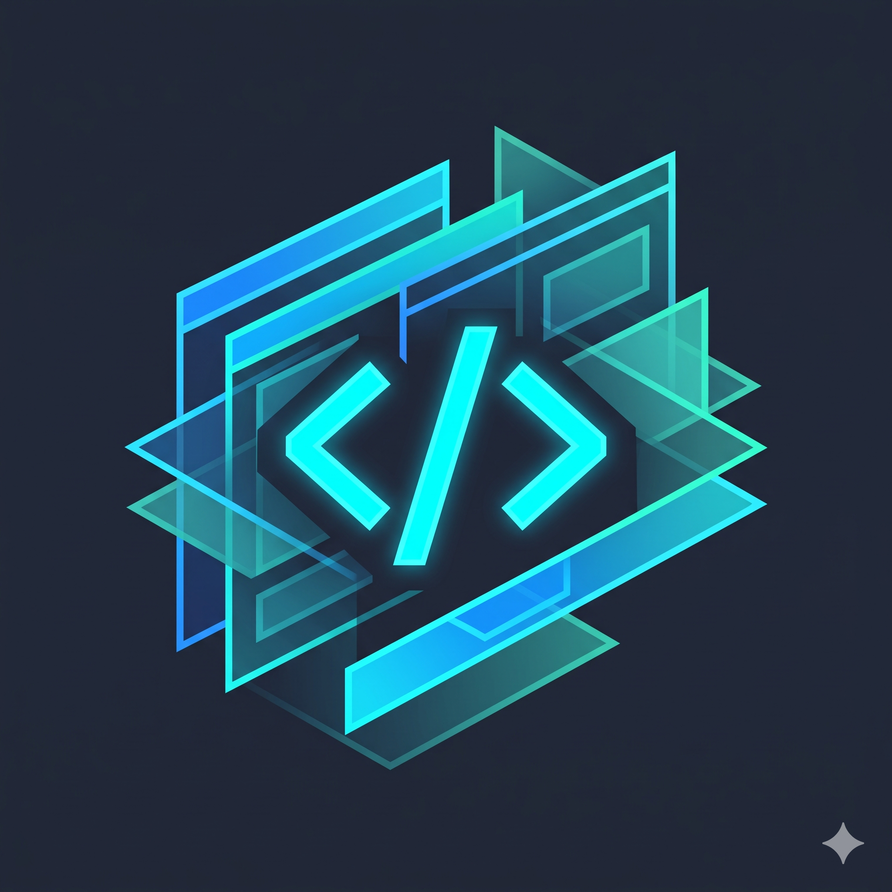
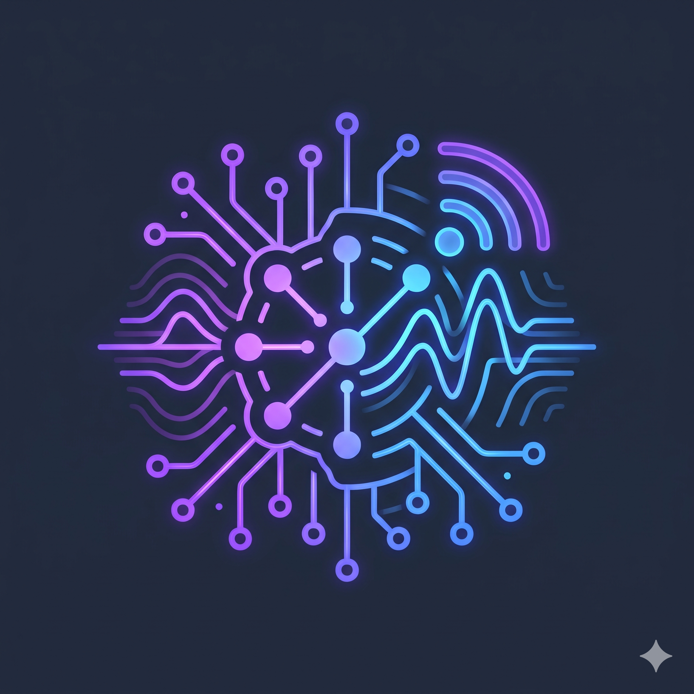
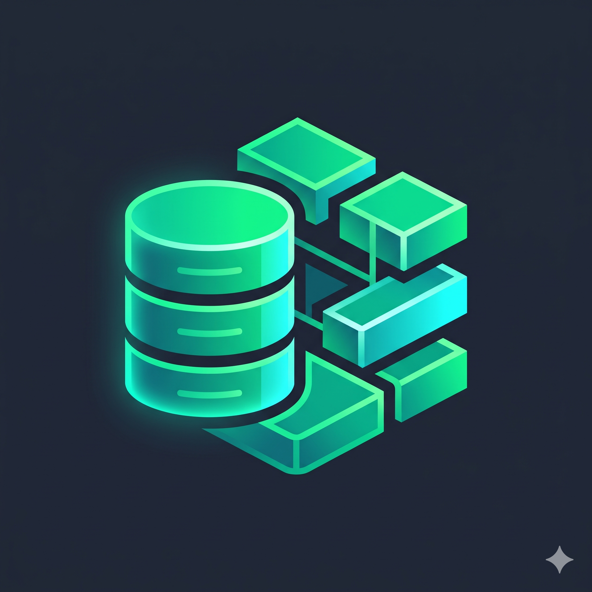
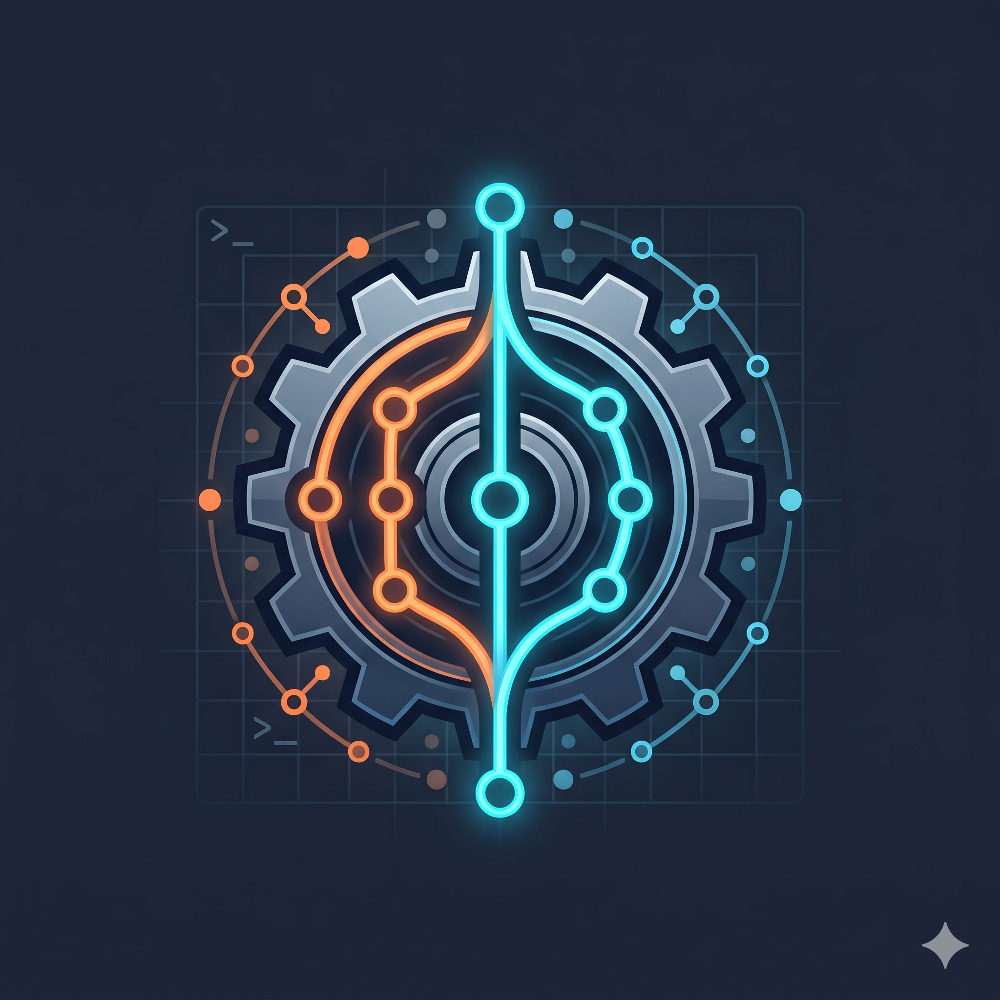
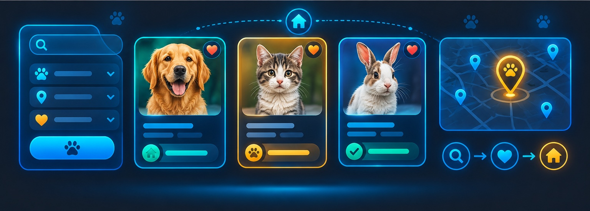

Building scalable full-stack web applications with C#, ASP.NET Core, Angular, Blazor, and SQL Server using Clean Architecture and AI-assisted Spec-Driven Development.
Full-stack software engineering across responsive front-end apps, RESTful back-end APIs, real-time messaging, relational databases, and AI-assisted Spec-Driven Development.

Angular, HTML5, CSS3, JavaScript (ES6+), TypeScript, Bootstrap, Responsive Web Design (Learning: React.js).

C#, ASP.NET Core, ASP.NET Core Web API, Blazor, Razor Pages, Entity Framework Core, LINQ, RESTful APIs, SignalR, JWT Authentication & Authorization.

Microsoft SQL Server, SQL, Relational Database Design & Schema Modeling, Clean Architecture, Spec-Driven Development (SDD), AI-Assisted Workflows, OOP, CRUD Operations, Debugging.

Visual Studio, Visual Studio Code, Git, GitHub, Swagger, Postman (Learning & Researching: AI Concepts, Python, FastAPI).
Designed and developed a real-time chat application supporting private conversations and group chats using an Angular frontend and ASP.NET Core Web API backend. Implemented bi-directional messaging via SignalR and secured API access using JWT authentication and authorization. Designed SQL Server schemas for users, messages, chat groups, group members, connections, user statuses, and notifications, supporting full message lifecycle tracking (Sent, Delivered, Read).
Technologies used: Angular, ASP.NET Core Web API, SignalR, SQL Server, Entity Framework Core, JWT, Clean Architecture
Developed a job portal web application connecting job seekers and job providers with role-based access workflows. Integrated Angular frontend modules with ASP.NET Core Web API endpoints, JWT authentication, and user/company profile management.
Technologies used: Angular, ASP.NET Core Web API, Entity Framework Core, SQL Server, JWT
Architecting and building a pet discovery and adoption workflow platform completely using Spec-Driven Development (SDD). Structuring the ASP.NET Core 8 backend around Clean Architecture principles while implementing core REST APIs, database schemas, and authentication workflows.
Technologies used: Angular, ASP.NET Core 8, SQL Server, Clean Architecture, Spec-Driven Development (SDD)

Full-Stack .NET Software Developer with hands-on experience across the .NET stack (C#, ASP.NET Core Web API, Entity Framework Core, RESTful APIs), relational databases (SQL Server), and modern front-end frameworks including Angular and Blazor. Experienced in implementing Clean Architecture, JWT authentication, real-time communication with SignalR, Spec-Driven Development (SDD) methodologies, and end-to-end application workflows and debugging.
Academic Details & Continuous Learning: B.Sc. Computer Science, Mahatma Gandhi University, Kerala (Coursework Completed; 1 Paper Pending). Currently researching how AI works and learning Spec-Driven Development through hands-on AI-assisted builds, alongside expanding expertise in React.js, Python, and FastAPI.
Download Resume